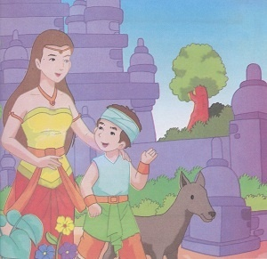
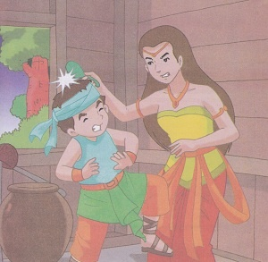
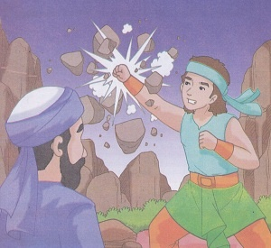
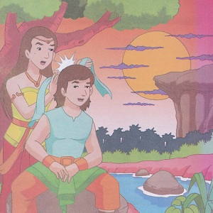
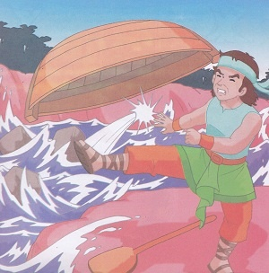

Sangkuriang
( Cerita Rakyat Jawa Barat )
Pada zaman dahulu kala, ada seorang perempuan cantik bernama Dayang Sumbi. Dia mempunyai seorang anak lali-laki yang bernama Sangkuriang. Dia sangat menyayangi anaknya, Dayang Sumbi tinggal dengan anaknya di kerajaaan. Selain itu, ada seekor anjing yang tinggal bersamanya yang diberi nama Tumang. Sangkuriang suka sekali berburu, setiap kali berburu ke hutan dia selalu ditemani oleh si Tumang. Setiap kali berburu dia selalu berhasil menangkap kambing hutan dan rusa. Sangkuriang senang bila berhasil menangkap binatang-binatang itu.
Pada suatu hari, sangkuriang telah melakukan kesalahan yang sangat besar. Sehingga membuat ibunya Dayang Sumbi marah besar, dia telah membunuh Tumang anjing peliharaannya. Sangkuriang tidak mengetahui, bahwa anjing itu adalah titisan dewa dan juga ayahnya. Tanpa sengaja ibunya memukul kepala Sangkuriang dengan sendok nasi yang dipegangnya, sehingga kepala Sangkuruiang Terluka. Sangkuriang menjerit kesakitan dan ia pun diusir dari rumah.
Sangkuriang bertekad tidak akan kembali ke rumah, ia mengembara tak tentu arah sampai akhirnya bertemu dengan seorang pertapa sakti. Ia diangkat sebagai murid terkasih. Semua ilmu kesaktiannya, diwariskan kepada Sangkuriang. Dua belas tahun kemudian ia sudah menjadi pemuda dewasa, wajahnya tampan dan tubuhnya gagah perkasa. Setelah selesai masa bergurunya, ia pergi mengembara. Pada suatu ketika, dalam petualangannya ia berkelahi dengan raja jin dan mengalahkannya sehingga tunduk dan bersedia diperintah apa saja oleh Sangkuriang. 
Pada suatu sore, Sangkuriang melihat ada gadis cantik di tepi sungai. Dia pun menghampiri gadis cantik itu, ternyata gadis cantik itu adalah Dayang Sumbi keturunan bidadari yang tetap awet muda. Dayang Sumbi pun jatuh hati kepada Sangkuriang. Sangkuriang pun menyatakan keinginannya untuk meminang Dayang Sumbi. Tapi alangkah terkejutnya Dayang Sumbi ketika melihat bekas luka di kepala Sangkuriang. Dia pun menceritakan Sangkuriang bahwa dia adalah anaknya. Akan tetapi Sangkuriang tidak menerima cerita Dayang Sumbi. Sangkuriang tetap ingin menikahi Dayang Sumbi. Dayang Sumbi pun memberi persyaratan kepada Sangkuriang apabila dia ingin menikahi dirinya. Dayang Sumbi meminta dibuatkan telaga dan perahu di puncak gunung dan harus selesai dalam waktu semalam sebelum fajar menyingsing.
Sangkuriang menyanggupi permintaan Dayang Sumbi. Dengan kesaktiannya, ia mengerahkan para jin untuk membantu menyelesaikan pekerjaan itu. Begitu pekerjaan itu hampir selesai, tengah malam Dayang Sumbi membunyikan lesung hingga ayam berkokok. Para jin yang membantu Sangkuriang mengira hari sudah hampir pagi sehingga mereka menghentikan pekerjaanya. Sangkuriang marah, pemuda sakti ini menendang perahu yang dibuatnya. Ketika terlungkup ke bumi perahu itu berubah menjadi sebuah gunung yang bernama “Tangkuban Perahu”.